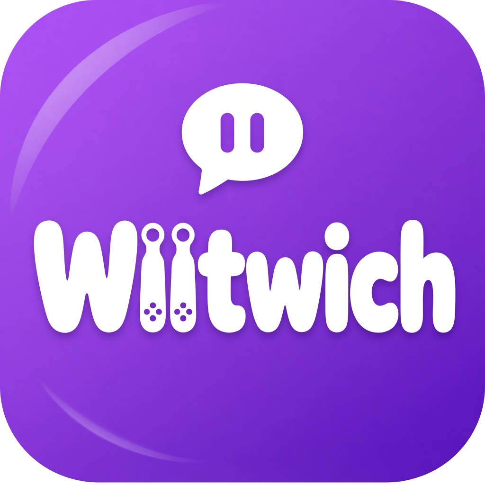

Live, on your TV
Browse live Twitch channels with stream thumbnails, viewer counts, titles and categories. Open a channel and watch with video and audio in full screen.
Bring Twitch to the big screen with Wiitwich. Discover live channels, watch your favorite creators and keep up with public chat — all with your Wii Remote.

A rounded, TV-friendly interface for discovering streams and settling in to watch.
Browse live Twitch channels with stream thumbnails, viewer counts, titles and categories. Open a channel and watch with video and audio in full screen.
Explore categories, browse recommended live channels, or use the on-screen keyboard to search. Switch the stream language filter between Spanish, All, English and Portuguese.
See channel avatars, profile and offline banners, and real artwork loaded directly from the service. Browse available public videos from a channel.
Read real public chat alongside the stream. Show or hide the chat panel while watching. Chat is read-only; emotes appear as text.
Play compatible public Twitch VODs directly, with video and audio. Videos start from the beginning; seeking, saved playback positions and historical video chat are not supported.
Designed for the Wii Remote: point and press A to select, use 1 to search, 2 to refresh, − to change the language filter, B to go back or open settings, and HOME to exit.
Browse and load artwork directly over HTTPS. An optional companion server on a PC on the same network provides an HTTP video proxy or FFmpeg transcoding for lighter playback.
A homebrew-enabled Wii and a working internet connection are required.
TTVW.apps/TwitchWii/ to your SD card’s apps/ directory, then launch it from the Homebrew Channel.Install responsibly. Try the Homebrew Channel build first. The WAD is experimental and has not been tested on physical Wii hardware. Back up your NAND and set up recovery protection such as BootMii/Priiloader before installing channels. Follow the repository’s instructions.